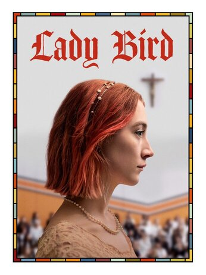

If you don’t have a track record as a director, you need a damn good script. Greta Gerwig knew she had the first draft of one, 350 pages long and called Mothers And Daughters. “That’s my way. I go too big and then I find the essence and pare it back,” Gerwig explains. This was 2013 and Gerwig did have something of a track record. But it was as an actress and co-writer, first with Joe Swanberg on ultra low-budget, improv-heavy films including Hannah Takes The Stairs and Nights And Weekends (which she co-directed) and then notably with Noah Baumbach on Greenberg and Frances Ha. The latter had been released in 2012 and Gerwig’s engaging, deceptively effortless performance had catapulted her from hipster indie favourite to mainstream indie darling. Mistress America, again co-written with Baumbach, crystallised her reputation. Throughout this time, Gerwig worked on her first solo script, honing and refining down the 350 pages. By 2015, she was meeting with her agents at UTA to put together a list of producers and financiers to show it to. The obvious choice was Scott Rudin, who had been involved with Frances Ha and Mistress America. But she was initially reluctant to send it to him. “I didn’t want to put him in a position to say no,” she explains. “I thought perhaps in the future, if things went well, he’d work on my second or third film. But he called and said, ‘Could I read it?’ And in about 12 hours, he said he would produce it. And it was a tremendously productive, wonderful working relationship.”
Gerwig had always planned to direct the script now called Lady Bird. While not autobiographical exactly, the project, set in Sacramento in 2003, was an achingly tender love letter to her hometown, to her awkward, yearning teenage self, and ultimately to her mother. “None of the events in the movie are the events of my life,” she states clearly. “I never made anyone call me by a different name and my parents 100% knew I was applying to schools in New York. But there is an emotional core and truth to it in the relationships that feels right to me. It’s also a terrible thing to give someone the weight of trying to be me or trying to be my friend, and I always wanted [the actors] to have the freedom to make the person whoever they thought they should be.”

While at Toronto International Film Festival promoting Maggie’s Plan in 2015, Gerwig met Saoirse Ronan, who was in town to support Brooklyn. She gave her the script to read with no further explanation. “I wanted the script to stand alone as a piece of writing,” Gerwig recalls. “Instead of over-explaining what it was, if I wanted a person to be in it, I would just give them the script and they would read it and hopefully have an experience that is as close to watching the movie as possible. I want the writing to be the thing that sells the script.”